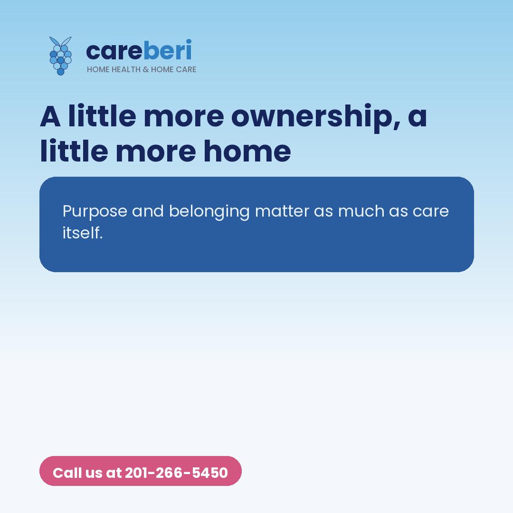

A recent piece from Senior Housing News makes the case that senior living communities could help residents feel more purpose and belonging by giving them more say over their own living spaces and daily routines. We think about this a lot at Careberi, just from a different angle. When care happens at home, that sense of ownership is already built in. It is their kitchen, their favorite chair, their own schedule. Our caregivers step into that world gently, supporting daily life without taking it over. For families across Northern New Jersey, from Bergen County to Morris County, that balance of help and independence is often exactly what brings peace of mind. Home care lets people stay the author of their own days, with a little support close by. Read more: https://seniorhousingnews.com/2026/07/31/why-senior-living-operators-should-consider-giving-residents-more-ownership/ Follow along for more caregiving tips, or call us at 201-266-5450. #HomeCareNJ #SeniorCare #Caregiving #BergenCounty #NJseniors